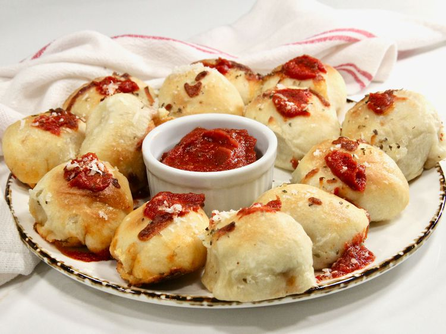

Pizza Poppers
Home

Description
These pizza poppers are mini pizza bites, customized with your favorite pizza toppings. They’re the perfect game day snack, finger-friendly for kids, and good for any get-together.
Ingredients
- 1 cup shredded mozzarella cheese
- 1/3 cup cooked and crumbled bulk italian sausage
- 1/3 cup chopped pepperoni
- 1 pound fresh pizza dough
- 1 1/4 cups pizza sauce
- 2 tablespoons vegetable oil, or more as needed
- 1/2 teaspoon dried basil, or to taste
- 1/2 teaspoon dried oregano, or to taste
- 1/4 teaspoon garlic powder, or to taste
- 1/4 cup grated Parmesan cheese, or to taste (optional)
Steps
- Preheat the oven to 425 degrees F (220 degrees C).
- Combine mozzarella, sausage, and pepperoni in a small bowl; set aside.
- Lightly flour a work surface, and roll out dough 1/4-inch thick. Cut rounds with a biscuit or cookie cutter, and stretch each piece. Place a dollop of pizza sauce on each round, and top with about 1 tablespoon meat mixture. Fold dough over toppings into a ball, pinching the bottom to seal well; set aside, seam side down.
- Lightly brush a cast iron skillet with oil. Place pizza poppers in skillet, and brush tops with oil. Sprinkle with basil, oregano, and garlic powder.
- Bake in the preheated oven for 15 to 20 minutes, or until golden brown. Garnish with grated Parmesan, and serve with pizza sauce for dipping.